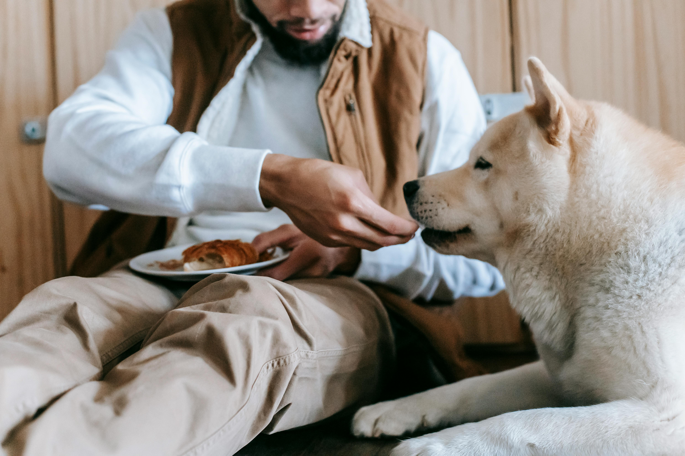
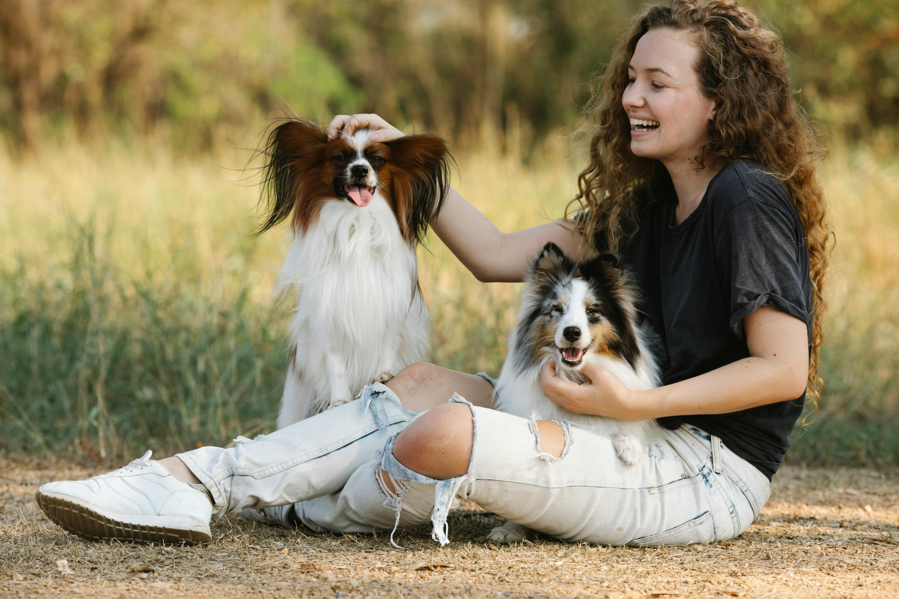
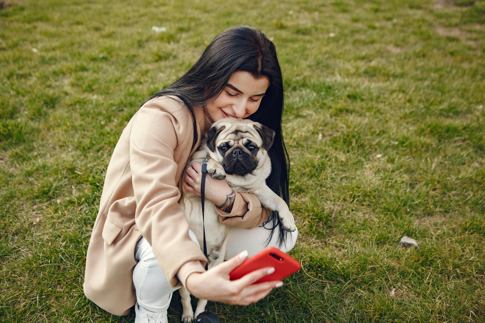

Feed them
Feeding dogs is not just about nutrition; its a joyful experience that significantly contributes to their happiness. At "World's Best Dogs," we understand that mealtime is a highlight of a dog’s day. Providing a balanced and tasty diet not only ensures their physical health but also stimulates their senses, bringing excitement and satisfaction. The act of feeding your dog fosters a bond between you and your furry friend, reinforcing trust and love. Additionally, healthy, delicious meals contribute to their overall well-being, leading to a happier, more energetic, and content canine companion. Join us as we explore the joys and benefits of feeding your dog right.
Play with them
Playing with dogs is one of the best ways to ensure their happiness and well-being. At "World's Best Dogs," we know that regular playtime is essential for a dog's mental and physical health. Engaging in activities like fetch, tug-of-war, or agility exercises stimulates their minds, keeps them physically fit, and strengthens the bond between you and your furry friend. Playtime also provides an outlet for natural behaviors, reducing stress and preventing boredom-related problems. In essence, play not only brings joy to your dog's life but also fosters a happier, healthier, and more fulfilling relationship for both of you
Love them
Loving dogs brings immense joy not only to their lives but also to ours. At "World's Best Dogs," we believe that showering your furry friend with affection, attention, and care significantly boosts their happiness and well-being. Dogs thrive on human interaction, and simple acts like petting, playing, and spending quality time together can make them feel cherished and secure. A well-loved dog is more likely to exhibit positive behaviors, maintain better health, and form a deeper bond with their owner. By loving your dog wholeheartedly, you're ensuring they live a joyful, fulfilling life, full of wagging tails and happy moments.